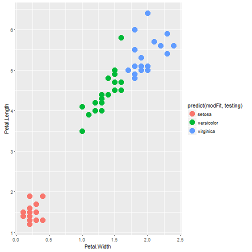

in order to test the various models you can:
- select a dataset to test
- define a training and testing set subsets
- select a model to test
- select the argument that will be participating
- review prediction results in a plot, confusion matrix or summary
Avner Freiberger
in order to test the various models you can:
the datasets available in the app are R
The following models are available for testing
https://avnerf.shinyapps.io/Model_Prediction_Test
